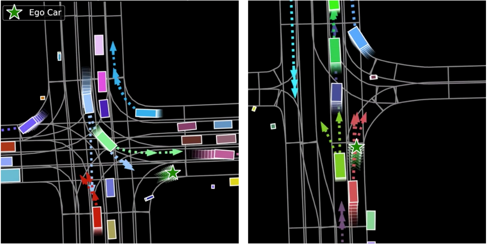
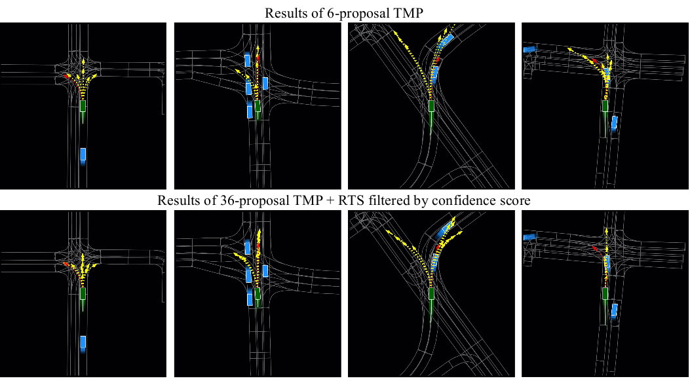

Multimodal Motion Prediction with Stacked Transformers
The Chinese Univsersity of Hong Kong1, SenseTime Research2
Computer Vision and Pattern Recognition (CVPR), 2021



|  |
@article{liu2021multimodal,
title={Multimodal Motion Prediction with Stacked Transformers},
author={Liu, Yicheng and Zhang, Jinghuai and Fang, Liangji and Jiang, Qinhong and Zhou, Bolei},
journal={Computer Vision and Pattern Recognition},
year={2021}
}